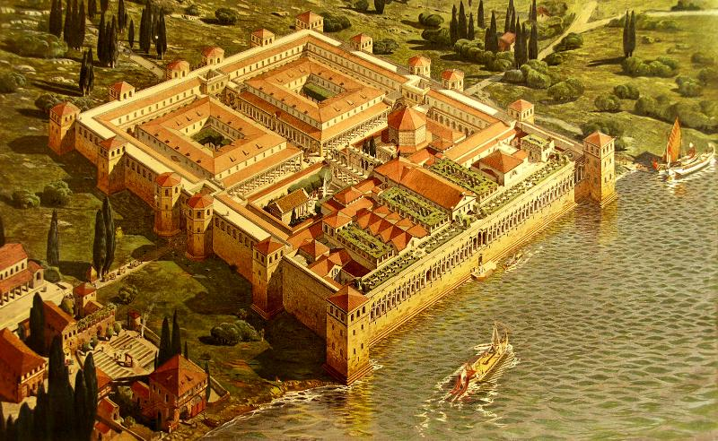
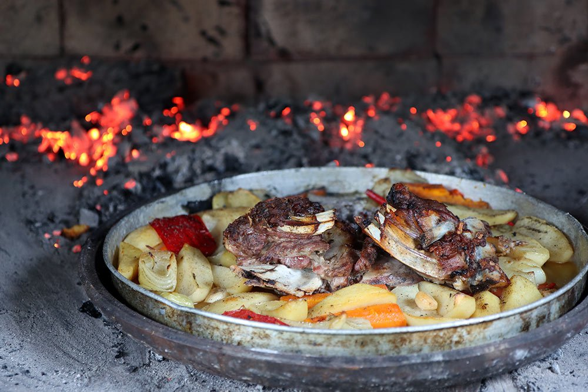
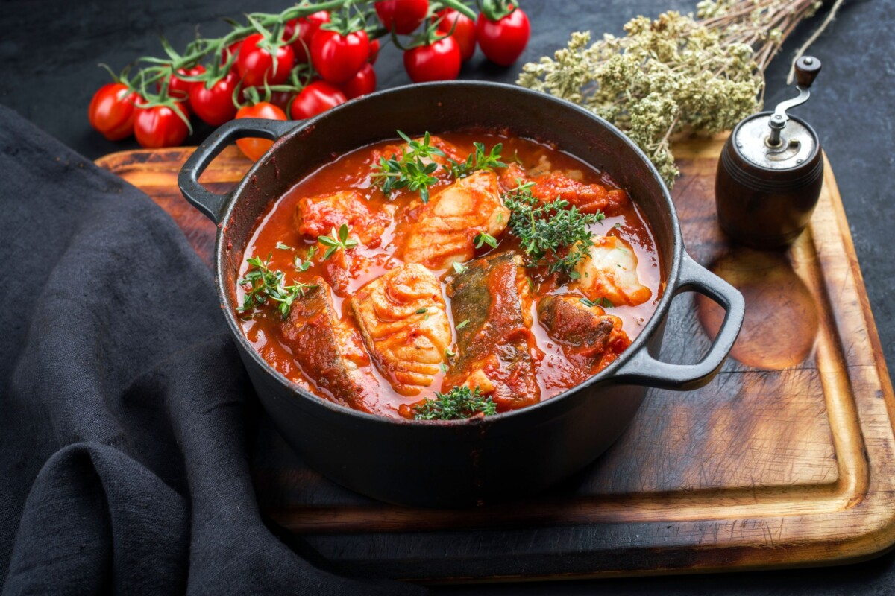
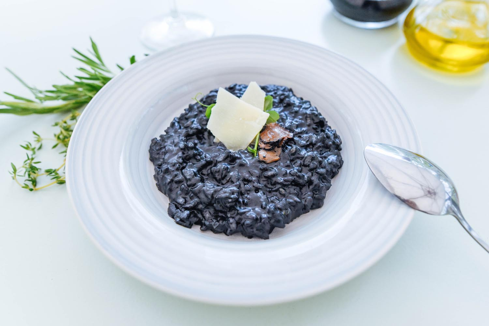
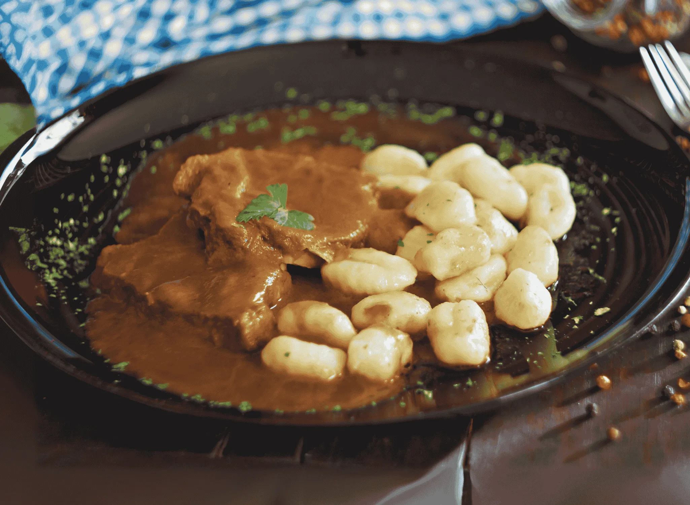
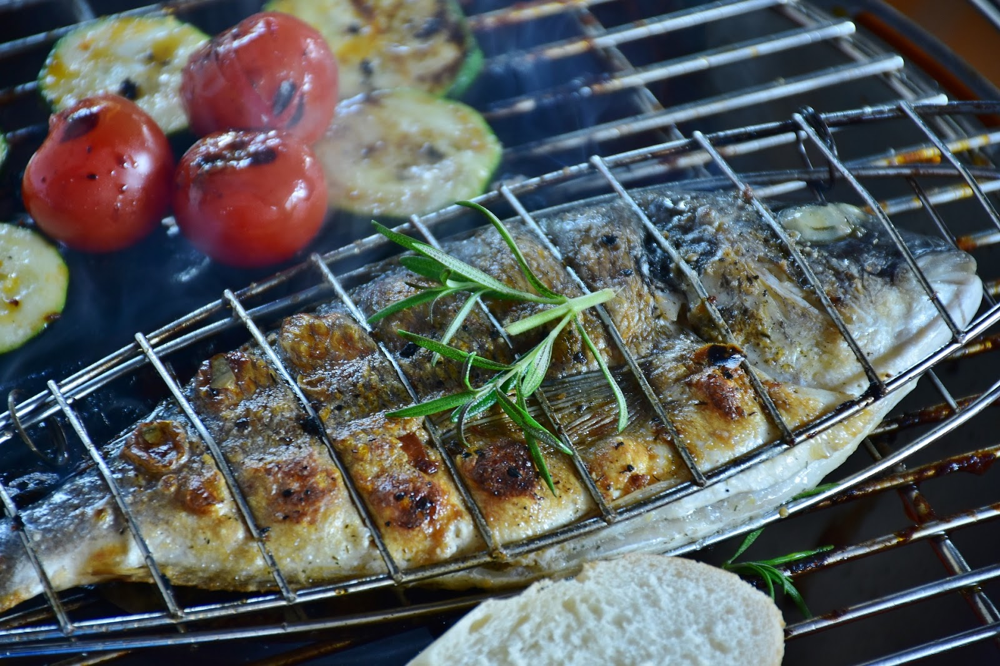
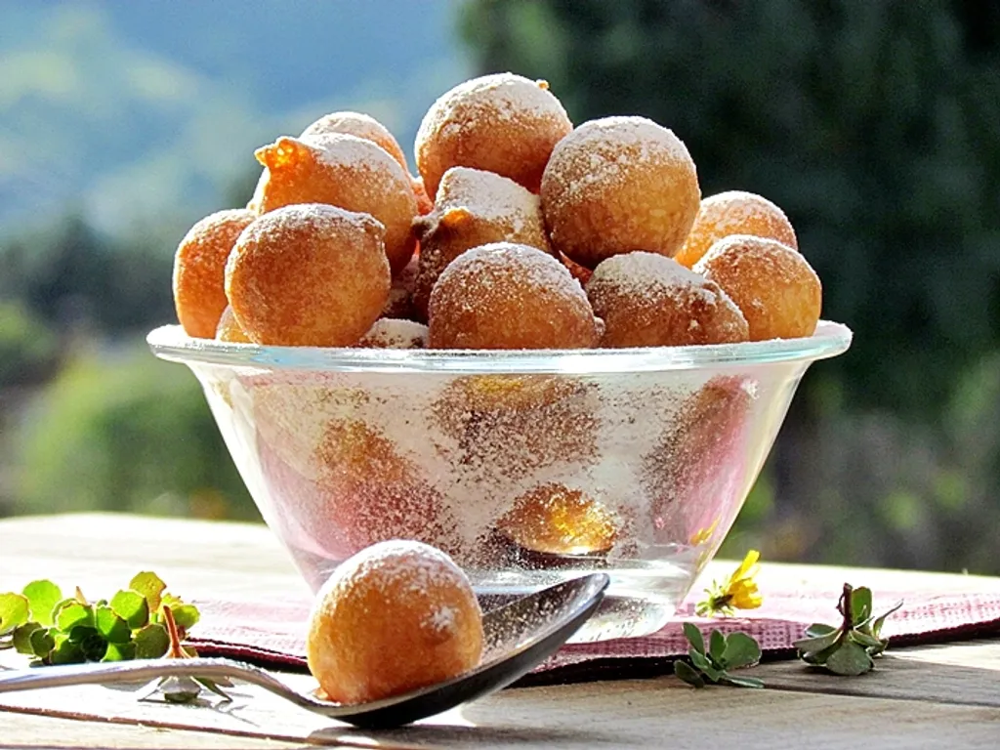
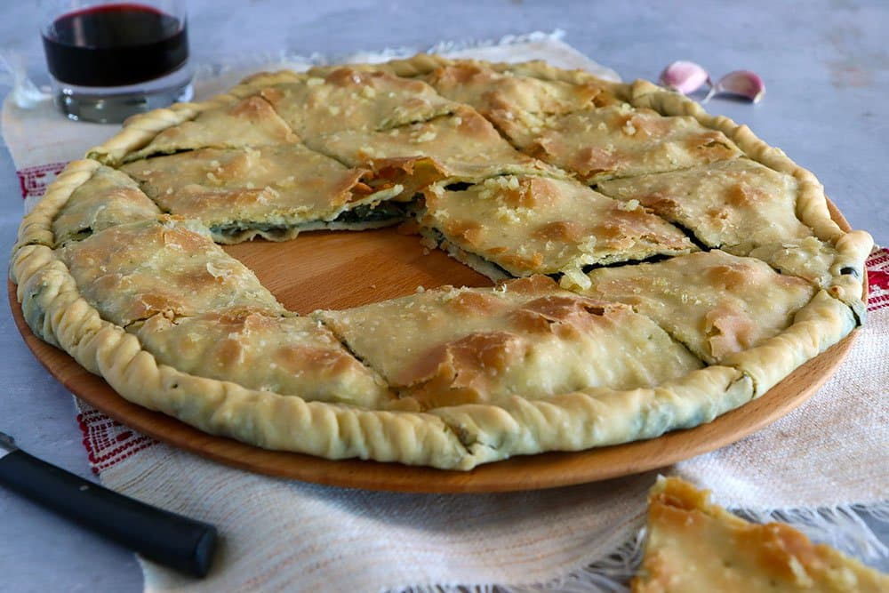
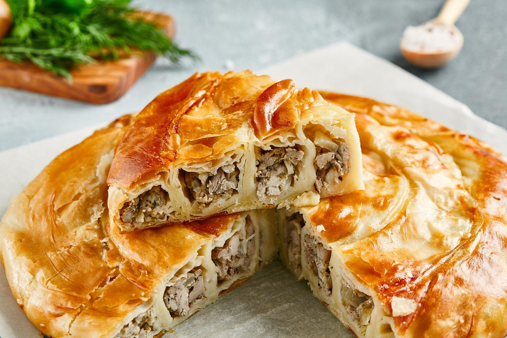

Built 295–305 · UNESCO World Heritage Site

Built between A.D. 295 and 305 as a fortified retirement residence for Roman Emperor Diocletian, the Palace covers nearly 30,000 square metres at the eastern edge of the old town — half the Emperor's private quarters, half a Roman military garrison. It is one of the most complete Roman structures surviving anywhere in the world.
After the fall of the Empire, refugees fleeing the destruction of the nearby Roman city of Salona moved inside the Palace's protective walls. They never left. Their descendants live there still, seventeen centuries later — making this perhaps the only ancient Roman monument on Earth that has been continuously inhabited from the day it was built. Inscribed by UNESCO as a World Heritage Site in 1979.
"A city within a city — where 1,700 years of history live and breathe beneath your feet."
The unmissable experiences of an extraordinary city
From a 5-minute walk to bucket-list day trips
Beyond these named beaches, the Dalmatian coast hides hundreds of small coves and secret swimming spots. Drive south toward Omiš and Makarska, north along the road to Trogir, or down any unmarked path through the pines — and you'll find your own private beach. The more you wander, the more this coast gives you.
Dalmatian cooking celebrates simplicity and supreme quality. Ultra-fresh Adriatic seafood, cold-pressed olive oil, sun-ripened vegetables, wild herbs and local wine — the building blocks of every great meal here.
Olive oil, garlic and sea salt appear in nearly every dish. Locals say the Adriatic salt air itself seasons the food before it reaches the kitchen.
The Dalmatian hinterland produces world-class wine. Plavac Mali (a powerful red, cousin of Zinfandel) and crisp white Pošip are local gems. Ask for "domaće vino."
The most beloved dishes take time and patience. Peka — meat or seafood slow-cooked under a cast-iron bell — can take 3 hours. Not fast food. A philosophy of life.
Dalmatian fishermen have supplied Split's markets for centuries. Sea bream, sea bass, John Dory, dentex and octopus are daily staples. If it's on the menu, it was almost certainly caught that morning.
Walk two streets away from any main tourist promenade. Prices drop, quality rises, and the restaurants are full of locals — always the best sign.
Your Croatian food bucket list

Lamb or octopus slow-cooked for 2–3 hours under a cast-iron bell covered in hot embers. The defining Dalmatian experience. Order in advance.

A rich fisherman's stew of mixed Adriatic fish, onions, tomatoes and wine, simmered low and slow. Served with creamy polenta. Every grandmother has a secret recipe.

Risotto made dramatically black with cuttlefish or squid ink. Intensely briny, deeply flavoured. A Dalmatian icon that divides tourists and unites locals.

Slow-braised beef marinated overnight in vinegar, prunes and spices, cooked in a silky sweet-savoury sauce with Prošek wine. Served with homemade gnocchi. Sunday-lunch perfection.

Fresh Adriatic fish (sea bream, sea bass, dentex) simply grilled with olive oil, garlic and herbs. Served with blitva and boiled potatoes. Perfection in simplicity.

Small fried dough balls with rum, citrus zest and raisins — Croatia's answer to doughnuts. Traditionally Christmas food, but found year-round. Utterly addictive.

A UNESCO-protected savoury pie from the Omiš region, filled with Swiss chard, onions and olive oil. Simple, ancient, extraordinary — a true taste of old Dalmatia.

Flaky phyllo pastry filled with cheese (sir) or minced meat. The Dalmatian breakfast of champions. Best eaten piping hot from the bakery at 7 AM.
Wines, brandies and the daily coffee ritual
Want to go deeper? TasteAtlas's dedicated Split page covers every traditional dish, drink and ingredient rooted in this city — beautifully illustrated and ranked by locals and travellers.
From Michelin-level dining to corner-konoba locals
Bars, beach clubs and late-night spots worth knowing
Most downtown clubs come alive after midnight in summer. Dress smart-casual — no flip-flops or beach attire.
The Adriatic archipelago is your playground
We can arrange private boat tours and ferry tickets for any of these — just ask.
Extraordinary destinations within easy reach
Our trusted private driver covers all of these — comfortable, reliable, on time. Just ask.
Everything you need to feel like a local
Need a recommendation, a reservation or a real local taking your call? We're a phone call away.